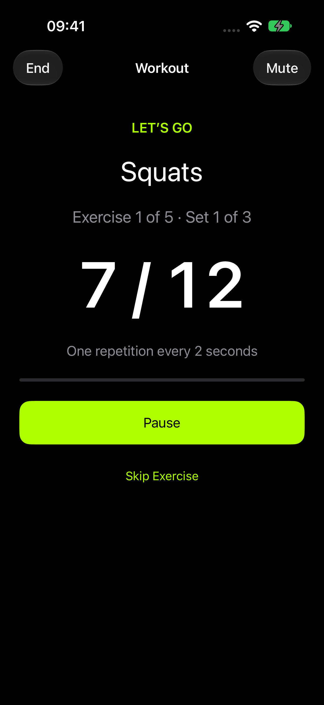

Make it yours.
Start with a ready-made workout or build your own. Choose exercises, set repetitions or time, and adjust your rest.
WORKOUT PILOT / IPHONE & IPAD
Build a session that fits you. Let your voice coach count the reps, time the sets, and guide your next move.
Offline coaching. No account. No subscription.

FROM PLAN TO LAST REP
Start with a ready-made workout or build your own. Choose exercises, set repetitions or time, and adjust your rest.
English voice guidance counts your repetitions and keeps your session moving. Pause or skip whenever you need to.
Save the workouts you enjoy. Your plans and preferences stay on your device, ready for your next session.
START SIMPLE. BUILD FROM THERE.
Train with ten free bodyweight exercises. Workout Pilot Plus unlocks the full library of 887 exercises with a single lifetime purchase.
No subscription. Pricing is shown in the app. An internet connection is needed to purchase or restore access.
About purchases →No ads or analytics SDKs. No account to create. Just your next session.
Read our privacy policy →